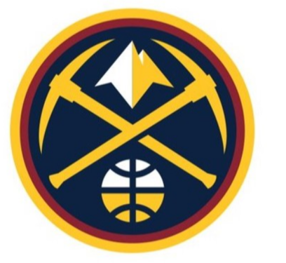

Nuggets
The Denver Nuggets are an American professional basketball team based in Denver. The Nuggets compete in the National Basketball Association (NBA) as a member of the league's Western Conference Northwest Division. The team was founded as the Denver Larks in 1967 as a charter franchise of the American Basketball Association (ABA), but changed its name to Rockets before the first season. It changed its name again to the Nuggets in 1974. After the name change, the Nuggets played for the final ABA Championship title in 1976, losing to the New York Nets. The team has had some periods of success, qualifying for the ABA Playoffs for all seasons from 1967 to the 1976 ABA playoffs where they lost in the finals. The team joined the NBA in 1976 after the ABA–NBA merger and qualified for the NBA playoffs in nine consecutive seasons in the 1980s and ten consecutive seasons from 2004 to 2013. However, they have not made an appearance in a championship round since their last year in the ABA; as such, they are also the only of the four surviving former ABA teams to have never reached the NBA Finals. The Nuggets play their home games at Ball Arena, which they share with the Colorado Avalanche of the National Hockey League (NHL) and the Colorado Mammoth of the National Lacrosse League (NLL).
Carmelo Kyam Anthony (born May 29, 1984) is an American professional basketball player for the Portland Trail Blazers of the National Basketball Association (NBA). He has been named an NBA All-Star ten times and an All-NBA Team member six times. He played college basketball for the Syracuse Orange, winning a national championship as a freshman in 2003 while being named the NCAA Tournament's Most Outstanding Player. After one season at Syracuse, Anthony entered the 2003 NBA draft and was selected with the third overall pick by the Denver Nuggets. While playing for Denver, he led the Nuggets to the playoffs every year from 2004 to 2010; the team won two division titles in that span. In 2009, Anthony led the Nuggets to their first Conference Finals appearance since 1985. In 2011, he was traded from Denver to the New York Knicks days before the NBA trade deadline. In a January 24, 2014 game against the Charlotte Bobcats, Anthony scored a career-high 62 points, setting a Knicks' single-game scoring record and a Madison Square Garden single-game scoring record. Anthony was traded to the Oklahoma City Thunder, where he played one season before signing with the Rockets. Anthony has played in the Olympics for the US national team a record four times, winning a bronze medal with the 2004 squad and gold medals on the 2008, 2012, and 2016 Olympic teams. As of April 2016, he was the US Olympic team's all-time leader in points, rebounds, and games played.
Nikola Jokić (/ Serbian Cyrillic: Никола Јокић; born February 19, 1995) is a Serbian professional basketball player for the Denver Nuggets of the National Basketball Association (NBA). He also represents the Serbian national team. Standing at 6 ft 11 in (2.11 m), he plays in the center position. Nicknamed "the Joker", Jokić was selected by the Nuggets in the second round of the 2014 NBA draft. He was voted to the NBA All-Rookie First Team in 2016. In the 2018–19 NBA season, while leading the Nuggets to the Conference Semifinals, he received his first All-Star and All-NBA First Team selections. Jokić ranks among the top 10 on the all-time list of the NBA players with the most triple-doubles, where he is the leading European player, and he holds the record for fastest triple-double (achieved in 14 minutes and 33 seconds). He also won an Olympic silver medal at the 2016 Rio Games.